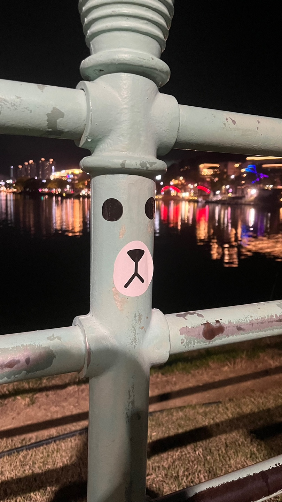
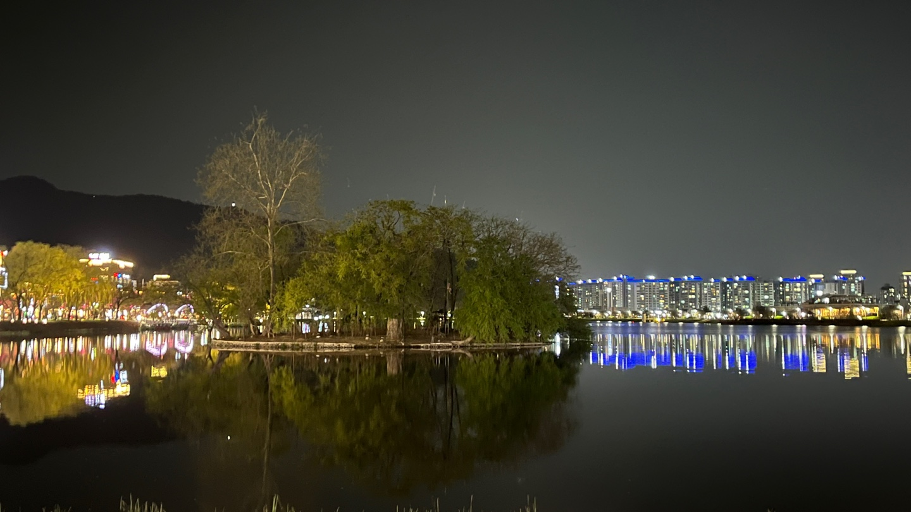
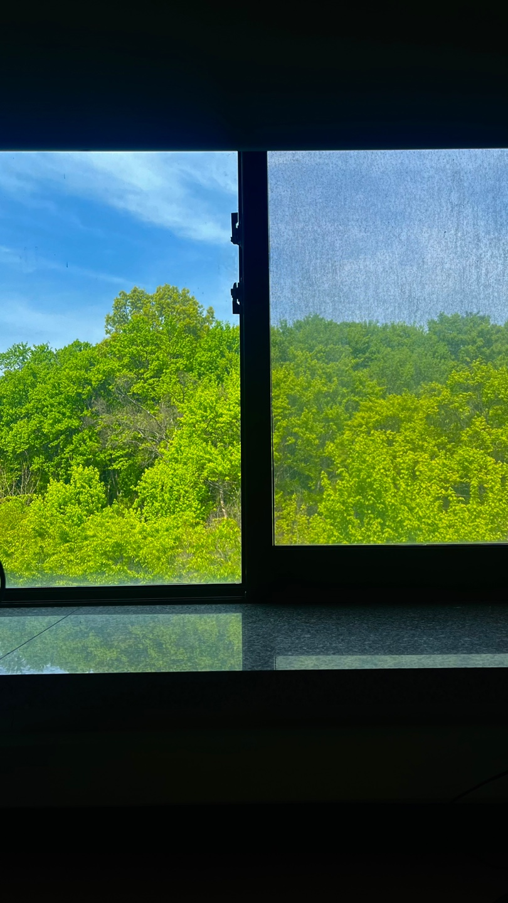
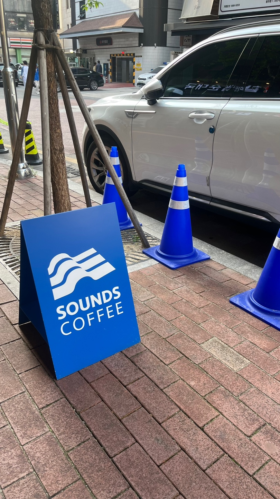
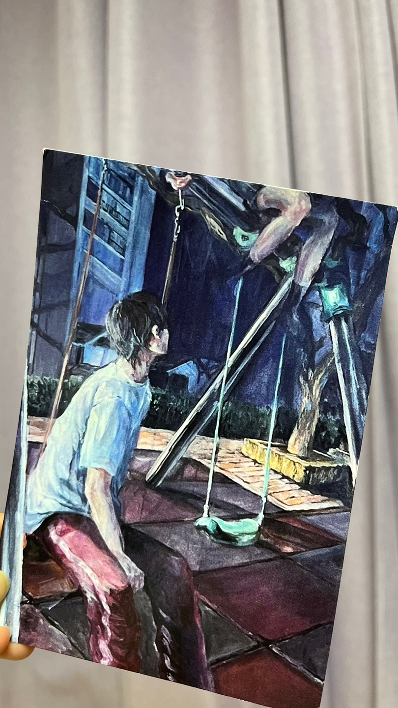
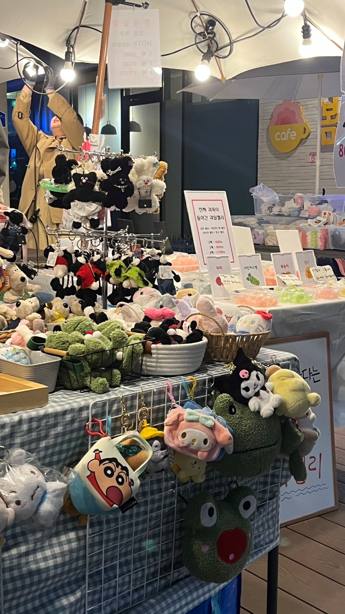
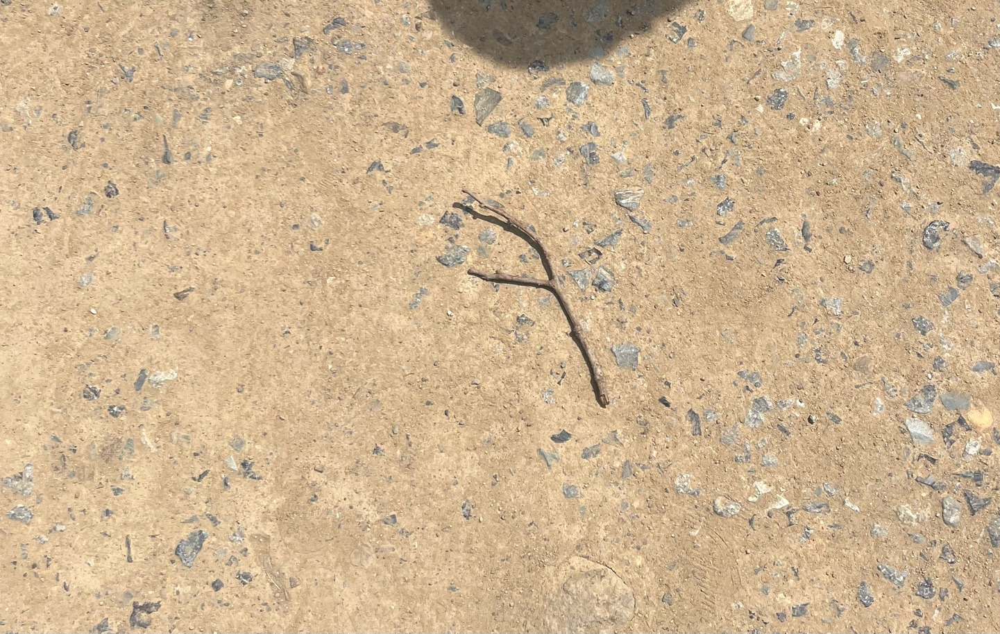
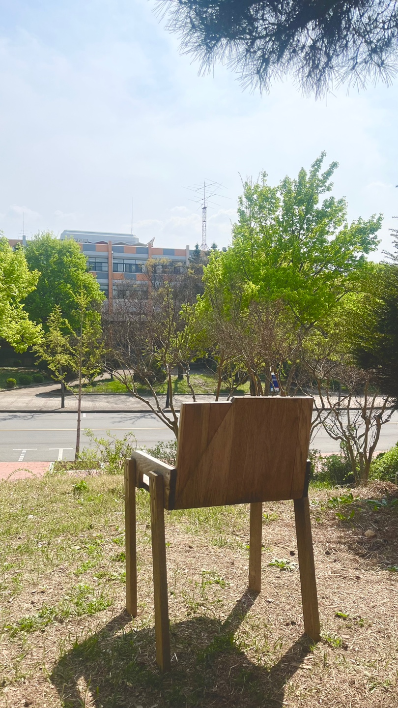
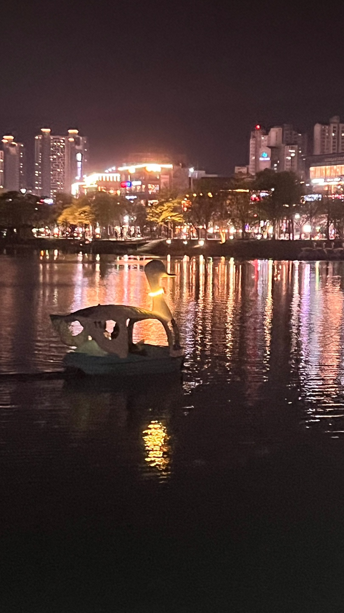
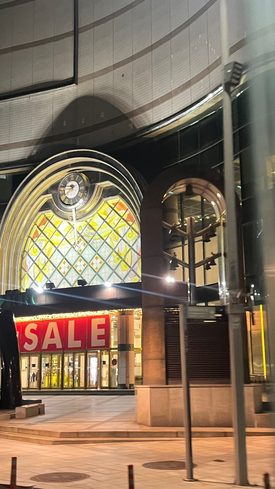

곰 스티커
산책하다가 스티커가 붙어있는 기둥을 보았다. 딱 붙어있는 눈, 그리고 곰 특유의 입 주변 하얀 피부 안에 있는 코와 입 스티커였다. 딱 보자마자 곰을 모티브로 한 라인 프렌즈 브랜드의 브라운 캐릭터를 닮아서 시선이 갔다. 자칫 심심할 수 있는 기둥에 이렇게 꾸며놓으니 귀엽다는 생각을 했다.
반영 사진
저번 주 소셜미디어 사진 영상 수업시간에 과제가 있었다. 물에 대상이 비치는 반영 사진의 개념을 알아봤다. 직접 찍어보기도 하였다. 그때는 영남대학교 안에서 정신없이 찍어서 제대로 된 사진을 찍지 못했다. 물에 완전히 비친 나무와 불이 켜진 건물들이 너무 이뻐서 넋을 놓고 쳐다보았다.
두개의 풍경
소셜미디어 사진 영상 강의실인 예술대학 3층 305호에서 찍은 사진이다. 한쪽 창문은 아무것도 없어서 그대로 보였다. 다른 한쪽은 방충망 때문에 흐리고 뭉개져 보였다. 그것이 같은 풍경인데도 분위기가 달라 이중적으로 보였다. 마치 겉과는 조금 다른 사람들의 심리를 연상케 하는 것 같았다.
고깔
아르바이트하는 곳 주변 카페 앞에 간판과 파란색 라바 콘 안전 고깔이 있었다. 바탕색인 파란색과 카페 로고와 글자인 흰색으로 이루어진 간판과 파란색인 고깔에 흰 띠가 둘러져 있었다. 의도된 것인지는 모르겠으나 깔 맞춤이 되어 보기 편안하고 안정된 기분이 들었다. 스쳐 지나갈 수 있는 부분이었는데 한 번 더 보게 되었다.
그네
수업을 마치고 예술대학 건물을 나왔다. 계단 밑에 버려져 있는 그림 한 장을 보게 되었다. 아파트 놀이터에서 아이 두 명이 놀고 있는 장면 같았다. 한 명이 그네 위 지지대에 올라타고 다른 한 명이 바라보고 있는 사진이었다. 문득 바라보고 있는 아이의 표정은 어떨까, 무슨 생각으로 바라보고 있을까 이입하며 쳐다보았다.
잡동사니
잡동사니들을 파는 상인들이 있었다. 가보니 다양한 캐릭터의 열쇠고리, 인형들이 있었다. 그중 산리오 캐릭터인 쿠로 미와 마이멜로디가 눈길이 갔다. 좌우로 완전히 대칭인 얼굴과 몸이 가로로 긴 편이라 눈에 잘 보였다. 아이들에게 대칭이 맞는다는 것은 안정적이면서도 더 귀여워할 수 있는 요소가 아닌가 생각했다.
나뭇가지
돌이 박힌 흙땅에 버려져 있는 ㅋ자 모양 나뭇가지를 보았다. 대학생들의 소통 사이트앱인 에브리 타임에 올라왔던 게시글과 비슷했다. 작성자는 시험 기간인 지금, f 모양 나뭇가지를 보았다고 학점이 f는 아니겠지 하며 불안해하는 글이었다. 하지만 내 관점에서 해석하기에 루돌프가 흘리고 간 왼쪽 뿔같이 보였다.
의자
햇빛을 받아 광합성을 하고 있는 푸릇푸릇한 나무들과 그를 등지고 있는 의자가 있었다. 뒤에서 보니 밝고 화사한 나무들 쪽을 바라보며 홀로 외로이 우뚝 서있는 의자가 고독하고 쓸쓸해 보였다. 또, 관점을 달리하니 풍경들을 즐기며 여유롭게 책을 읽는 인자한 노인이 생각났다.
오리배
수성못에 산책할 겸 바람 쐬러 갔다. 날이 풀려서 그런지 오리 배를 타는 사람들이 많이 보였다. 오리배는 페달을 사용하여 회전하는 노 혹은 스크류에 동력을 전달하는 방식으로 작동된다. 이러한 과학적 원리와 외적인 디자인을 고려해서 제품 디자인을 해보고 싶다는 생각이 들었다.
대백 프라자
대백 프라자의 매장 입구에 있는 시계탑을 보았다. 어두워진 하늘 사이 웅장한 건물 속에 따뜻한 빛이 들어와있는 것이 잘 보였다. 위로 그림자 진 것이 마치 미녀와 야수에 나오는 시계와 양초의 한 쌍 같이 느껴졌다. 옆에서 따뜻한 빛을 내주며 시계 옆을 붙어 다니는 장면이 떠올랐다.